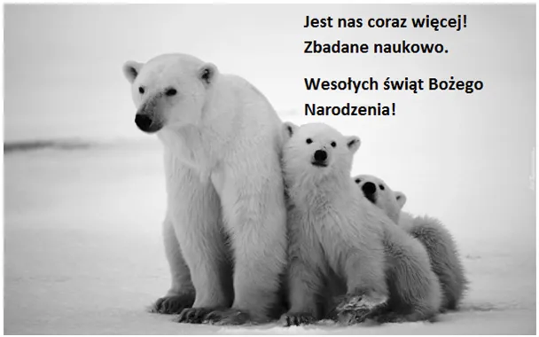

Jednym oziębienie, innym ocieplenie.
Zmiany są stałym elementem ziemskiego klimatu. Roczne cykle czterech pór roku zapewniają nam rytm życia i upraw, ale wystarczy porównać przebiegi pogody poszczególnych miesięcy 20 lat wstecz, aby zrozumieć, że bywa różnie.
Właśnie nad południową Europą rozbudowały się dwa duże wyże, które przy bezchmurnym nocnym niebie dają duże spadki temperatury poniżej zera. W krajach śródziemnomorskich i na Bałkanach, nie tylko w górach, mamy sporo przymrozków, typowych raczej dla początków stycznia. Za kilka dni dowiemy się, czy ucierpiały plantacje cytrusów.
Tymczasem na północ, w tym do Polski wyże nasuwają dużo ciepłego, wilgotnego powietrza. Atlantyk u wybrzeży Niderlandów ma 11 st. C i dzięki wielkiemu prądowi oceanicznemu z Zatoki Meksykańskiej będzie równie ciepły całą zimę, co gwarantuje Europie Zachodniej łagodny klimat. Polska jest na granicy tych wpływów i często na linii Wisły obserwujemy granicę azjatyckiego, ostrego klimatu kontynentalnego. Dziś ta granica jest zepchnięta daleko na wschód, pod Kijów. Prawie cała Turcja i pół Persji (Iranu) jest na minusie z powodu wysokich płaskowyżów tych krajów. W miastach nadmorskich mamy tam grudniowe, błogie 20 st. C w południe i noce w okolicy 10-15 st. C.
Wróćmy na swoje podwórko. Lokalnym magazynem ciepła jest Bałtyk, który ostygł szybko w listopadzie, ale ciągle ma ok. 5 st. C. Na wybrzeżu Pacyfiku w Azji na tej samej szerokości geograficznej, co Litwa mamy właśnie minus 29 st. C z powodu kontynentalnych wyżów ściągających z dalekiej północy wymrożone, suche powietrze. Pamiętajmy o tym narzekając na zimę, że tylko dzięki ciepłemu prądowi z Zatoki Meksykańskiej nie mamy przez długie miesiące stale ujemnych temperatur. Badaczka Niedźwiedzi Polarnych dr Susan Crockford na podstawie 15 lat badań podaje, że liczebność niedźwiedzi nie zmalała, lecz w rzeczywistości wzrosła o co najmniej 16 procent, a być może więcej. Pani Crockford wyrzucono z pracy przed emeryturą za jej 15 letni trud rzetelnych badań.
Paweł Klimczewski